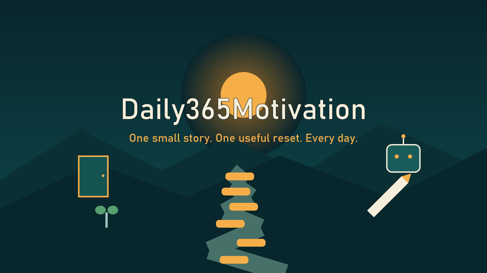

Momentum
Start with something small enough to begin, then let motion create more motion.

ONE SMALL STORY. ONE USEFUL RESET. EVERY DAY.
Short original animated stories about momentum, habits, setbacks, rest, confidence, and perspective.
Start with todayA USEFUL RESET
Daily365Motivation begins with a concrete situation, choice, setback, or visual metaphor. The ending turns the idea into one specific action you can use today.
SIX PLACES TO BEGIN AGAIN
No recycled quote cards, sermons, or guilt. Each story is built around a new situation and a useful action.
Start with something small enough to begin, then let motion create more motion.
Read the problem again. A setback can change the route without ending the trip.
Recovery is part of useful effort. Capacity matters more than performing exhaustion.
Make tomorrow's good choice easier by preparing one small thing today.
Confidence grows from evidence. Give yourself a small action you can actually complete.
Sometimes the useful move is not more force. It is a better angle on the same problem.
STORY FIRST
A tired runner can place shoes by the door. A nearly empty robot can recharge before returning to one task. A wrong turn can become a new route.
Concrete visual situations are easier to remember than generic speeches, so every episode aims for a miniature story with a visible change and payoff.
TRY THIS TODAY
Pick something you have been avoiding. Reduce it until ten minutes is enough to count. Prepare what you need, start the timer, and stop when the ten minutes are complete if you want to. The win is beginning on purpose.
Watch today's motivation